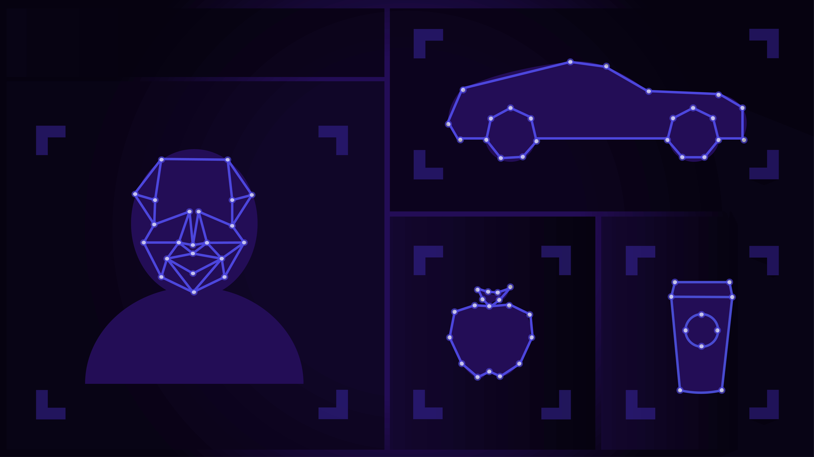
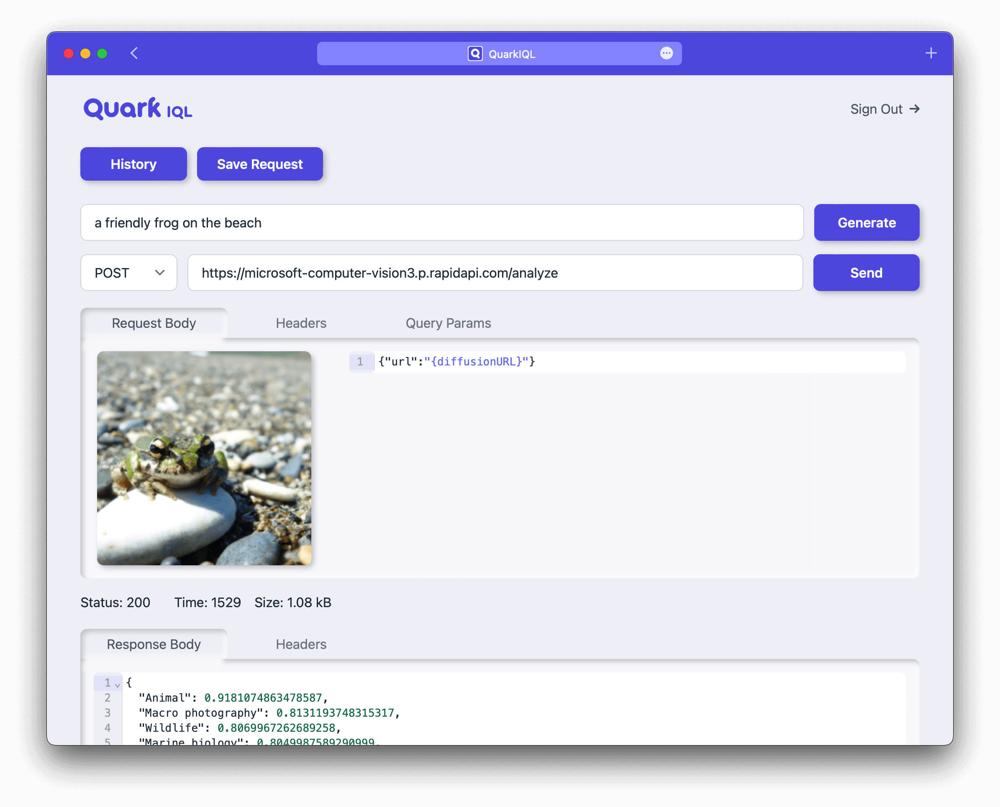
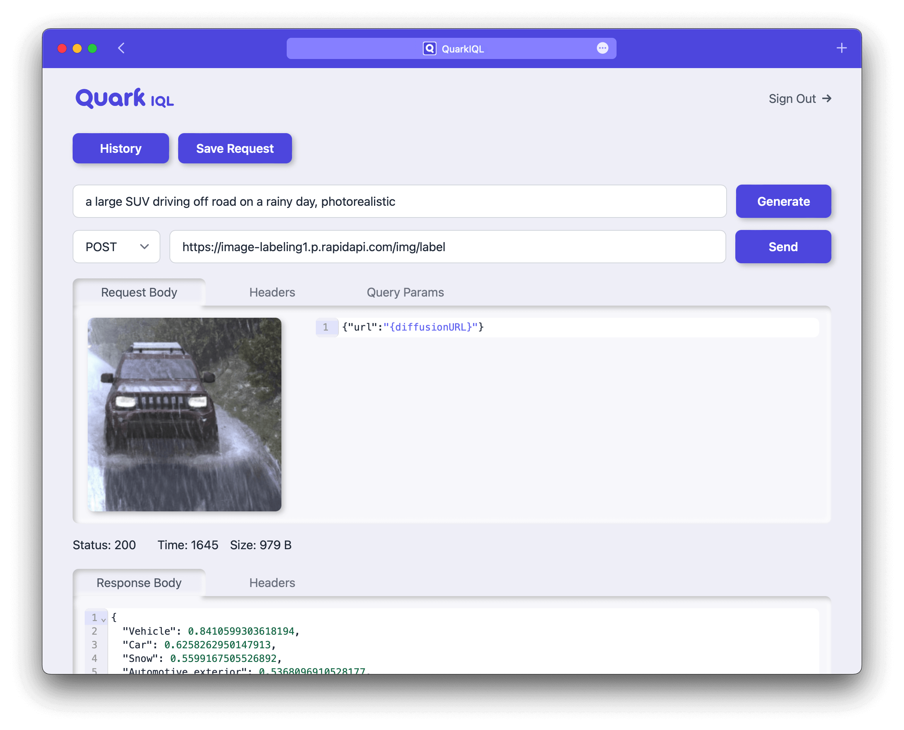
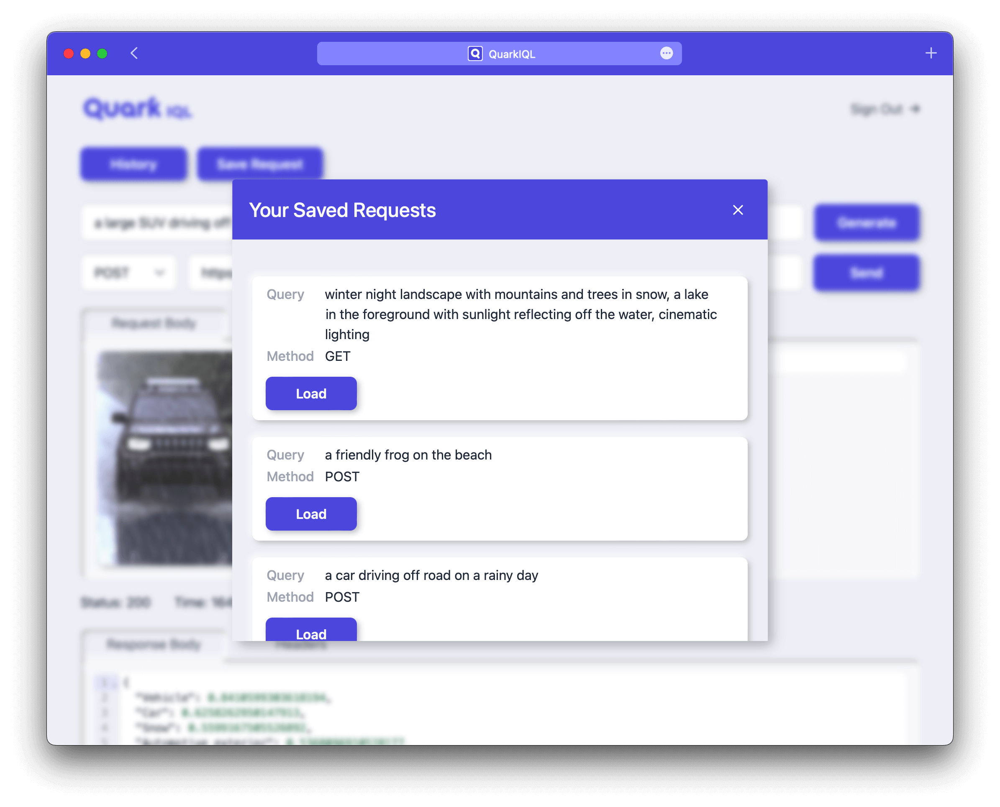

Generative Testing forComputer Vision APIs
Create custom images and requests in only a few clicks.
QuarkIQL is no longer available. More information below.
Thank you for your support.

Testing done right.
Quark can simplify your Image API testing workflow.
Features
Custom test images at the speed of now.
Quark gives you access to powerful image diffusion models. Simply type your prompt and recieve the test image you need.
Requests made easy so you can rest easy.
GET, POST, and everything else that gets you closer to your development goals.
Make history...and track it too.
Quark keeps a log of your queries so you can run more experiments without starting from square one.



Our Team
The people behind Quark Image Query Lab.
Kevin Yu
Software Engineer
B.S. Mechanical Engineering,
University of Texas at Austin

Jake Wigal
Software Engineer
M.S. Operations Research,
Naval Postgraduate School